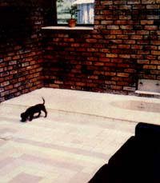

Note the tiled floor (laid down in the old ""Step Around the Mountain"" quilt pattern) of the Dycus attached greenhouse. Note, too, the sunken bathtub, brick walls, and ""grow light"" installed in the room. The economical fluorescent lighting fixtures are occasionally turned an to supplement the room's natural light on overcast winter days, and on some nights